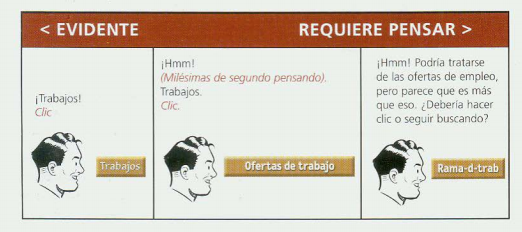
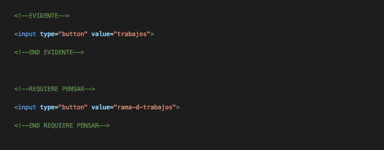
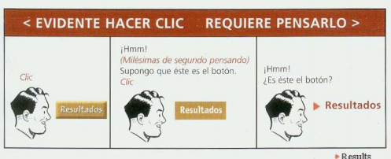
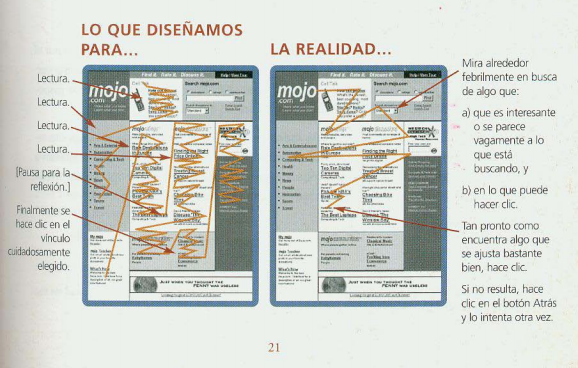
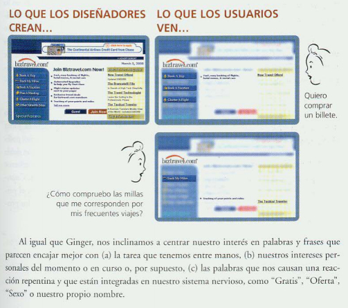

LA LÓGICA DE LA WEB
Lo que hace al usuario pensar...
En una página web, cualquier cosa puede detener al usuario y hacerlo pensar innecesariamente. Por ejemplo, los títulos de las páginas, los nombres confusos, los nombres específicos de la empresa y los nombres técnicos que no son familiares.
 Pero siempre hay que intentar hacer las cosas hacia lo "EVIDENTE". Como desarrolladores, estamos acostumbrados a movernos como todos unos profesionales por la web; es nuestro entorno. Pero esto no siempre es así para el resto de usuarios. De ahí radica la importancia de aplicar la usabilidad en la web, para que sea un medio accesible para todos y no una barrera que solo puedan atravesar unos cuantos. ¿Y cómo lograr esto? Una palabra lo resume "OBVIO". Es hacia esta palabra que deben apuntar nuestros sitios web.
Entonces... ¿Todo debe ser obvio?
El objetivo principal para cada página es, que debería ser evidente, que el usario solo con mirar supiera de lo que trata y de la forma en que se debe usar. Cuando hablamos de sitios web pequeños, no suelen haber grandes problemas, pero cuando un sitio web posee una navegación extensa, tiende a complicarse la obviedad. Si no se puede hacer una página fácil de entender a la primera, que al menos que sea autoexplicativa. O que contenga un manual de instrucciones.
¿Cómo se suele utilizar la Web?
Cuando creamos sitios nuevos, creemos que cada una de las páginas se va leer completamente y que nuestros técnicos títulos y extensos textos van a leerse. Pero la realidad es, y suele hacerse (si tenemos suerte), que los usuarios a lo mucho echan un vistazo, leen rápidamente parte del texto y hacen clic en el primer vínculo de su interés. Incluso hay partes extensas de la página que ni siquiera se miran. Entonces nuestros esfuerzos por crear literatura de calidad generalmente suelen ser ignorados por el 95% de los usuarios. Triste... Pero cierto. Recordando: lo importante es apuntar hacia lo obvio e ir directo al grano.
Si se quiere diseñar páginas web eficientes, tenemos que aprender a abrazar la visión con la que los usuarios promedio interactúan con la web.
 VOLVER A LA PÁGINA PRINCIPAL